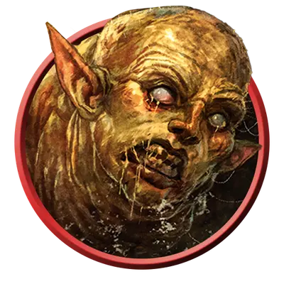

Ларва
Larva
Среднее Исчадие, Нейтральное Злое

Класс Защиты 9 Инициатива −1 (9)
Хиты 9 (2к8)
Скорость 20 футов
| мод | спас | ||
|---|---|---|---|
| СИЛ | 9 | −1 | −1 |
| ЛОВ | 9 | −1 | −1 |
| ТЕЛ | 10 | +0 | +0 |
| мод | спас | ||
|---|---|---|---|
| ИНТ | 6 | −2 | −2 |
| МДР | 10 | +0 | +0 |
| ХАР | 2 | −4 | −4 |
Чувства Тёмное зрение 60 футов, пассивное Восприятие 10
Языки знает Общий плюс один другой язык, но не говорит
Опасность 0 (10 опыта; БВ +2)
Действия
Укус. Бросок рукопашной атаки: +1, досягаемость 5 фт. Попадание: 1 (1к4 - 1) Некротического урона.
Бонус мастерства +2
Среда обитания Нижние планы
Сокровища Отсутствуют
Ларвы
Участь падших душ
Души, обречённые на скитания по Нижним планам, нередко превращаются в ларв — омерзительных червеобразных существ с искажённой внешностью их прижизненного облика. Эти жалкие создания почти полностью беспомощны и стараются не привлекать внимание более могущественных обитателей своих планов. Многие Исчадия считают их деликатесом, а маги используют в своих порочных ритуалах. Ночные карги часто собирают и пасут ларв, а также торгуют ими с тёмными силами по всей мультивселенной.
Некоторым ларвам удаётся выживать на Нижних планах достаточно долго, чтобы в итоге превратиться в других представителей низших Исчадий.
Воспоминания ларв об их прошлой жизни обрывочны и наполнены болью. Они стараются любой ценой избежать встречи с другими существами.